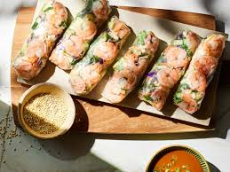

Salad Kit Spring Rolls with Sesame Dipping Sauce

Description
Need to get a head start on dinner tonight? Start with a salad kit, add veggies and a dipping sauce, and your main dish is done in 20.
Ingredients
- 3 tablespoons mirin
- 1 tablespoon less-sodium soy sauce
- 1 (10 to 13 ounce) Asian-style salad kit with sesame dressing
- (8 inch) round rice papers
- 16 medium cooked shrimp (41 to 50 per pound) - peeled, deveined, and halved lengthwise
- 2/3 cup chopped seeded cucumber
- 2 tablespoons chopped fresh basil, divided, or more to taste
- 1/2 cup chopped fresh cilantro
- sliced green onions, for garnish
Steps
- For dipping sauce, stir together mirin, soy sauce, and sesame dressing from salad kit in a small bowl.
- Line a tray with damp paper towels. Put a clean, slightly damp kitchen towel on a work surface. Fill a shallow dish with cold water.
- Working one at a time, soak a rice paper in cold water just until it starts to soften, about 30 seconds, and transfer to prepared work surface. Arrange 4 shrimp halves, about 1/3 cup salad kit greens, a few pieces of cucumber, and 1 tablespoon cilantro on bottom third of rice paper, leaving a 1-inch border. Bring up bottom edge of rice paper to cover filling. Fold in sides and roll up tightly.
- Transfer roll to prepared tray; cover with additional damp paper towels to prevent drying. Repeat soaking, filling, and rolling with remaining rice papers, shrimp, greens, cucumber, and cilantro, leaving space between rolls to prevent sticking. Garnish dipping sauce with green onions and serve with spring rolls